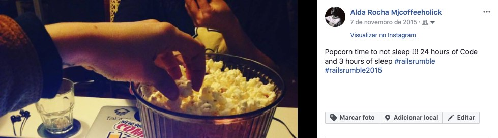
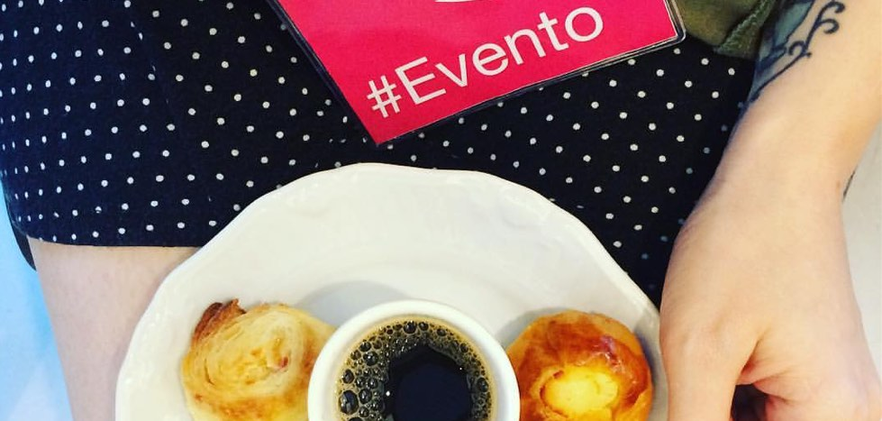

Sobre o Codamos
O Codamos é como uma vitrine de eventos, meetups, cursos, workshops, palestras e palestrantes, aqui, você pode achar eventos inclusivos. Nosso propósito é descomplicar a comunicação entre quem organiza e quem quer participar de eventos. As pessoas são nossa essência, estão em primeiro lugar e fazemos o nosso melhor para reconhecer, valorizar e respeitar a pluralidade.
Nossa história e motivação
Em 2014 resolvi participar de um hackathon de Rails que acontece on-line, o Rails rumble, e fazia muito tempo que eu sonhava em ter algum site ou projeto que ajudasse na questão da diversidade em eventos de tecnologia. A maioria das ferramentas e sites disponíveis para exibir eventos no momento não se preocupava com a diversidade, muitos eventos sequer tinham código de conduta. A ideia de ter um lugar como o Codamos nasceu junto com um grupo de amigos que apoiaram essa iniciativa.
Fizemos um estudo e resolvemos criar algo que fosse possível implementar em 48 horas! Nasceu o protótipo do Codamos. Na época queríamos algo um pouco mais focado em nichos, mas não foi possível implementar um monte de coisa que idealizamos, com isso nasceu uma versão 2 no ano seguinte. Mudaram as pessoas que colaboraram com a plataforma e com isso mudamos a forma como iríamos hospedar o Codamos, mudamos a linguagem que íamos trabalhar, nos tornamos um time mais preocupado com pessoas, aprendemos a ter empatia e em 2016 foi possível colocar uma versão MVP do projeto no ar com um grupo de voluntários colaborando.
Nosso propósito e aprendizado
Quando começamos esta jornada, poucas pessoas sabiam a parte de front end/back end e só algumas já trabalhavam na área, então foi um longo aprendizado sobre GitHub e controle de versão, HTML, CSS, Jekyll, UX, acessibilidade, diversidade... Tudo foi um aprendizado até onde estamos hoje, inclusive aprendemos como os eventos funcionam, entendemos como e onde conseguimos gerar inclusão e diversidade no setor, na verdade acho que ainda estamos aprendendo a fazer isso. Hoje posso falar que estamos todos bem mais amadurecidos como profissionais e projeto. Nossa equipe de voluntários é formada por pessoas de diversos backgrounds, formação e profissões ligadas à tecnologia. Somos uma plataforma sem fins lucrativos que recebe contribuições de todos que compartilham nossos objetivos e querem colaborar de maneira saudável e construtiva dentro do nosso ecossistema tecnológico.
Eu, pessoalmente, acredito que os eventos (tanto faz grandes ou pequenos) são o coração das comunidades e quando pensamos em comunidade mais diversa e mais inclusiva, são os eventos que devem refletir esse movimento! Entendo que represento só uma parcela dessa diversidade e entendo que mesmo tendo minhas dificuldades em tecnologia, ainda sou privilegiada em várias coisas e faço questão de usar esse tal rpivilégio para divulgar o Codamos e conseguir mudar ou ajudar minimamente outras diversidades dentro da comunidade.
Planos pro futuro
Nosso foco em 2019 é preparar mais o projeto para que receba contribuições open source, otimizar a curadoria dos eventos, ativar buscas por filtros, ampliar o cadastro de eventos englobando todo o Brasil e que qualquer possa cadastrar seu próprio evento na plataforma. Estamos trabalhando por isso, mas somos um time que se dedica voluntariamente e tenta aprender junto em várias etapas desse crescimento, portanto, tudo isso vai acontecer lentamente. Estamos aprendendo no processo. Sem o voluntáriado e a colaboração de cada um a gente não estaria aqui S2. A Diversidade é possível, dá trabalho, mas é perfeitamente possível e juntos podemos mudar nosso cenário atual na tecnologia!
- Alda Rocha @mjcoffeeholick